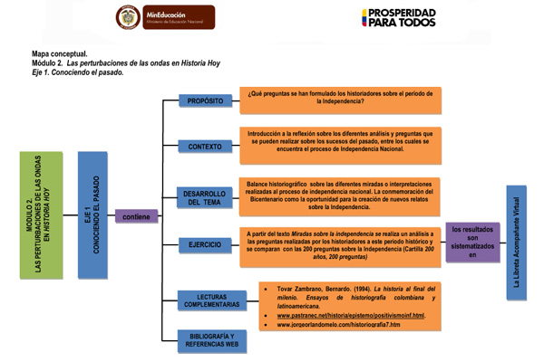
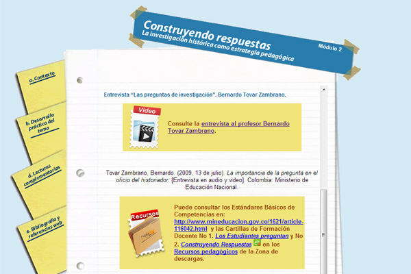
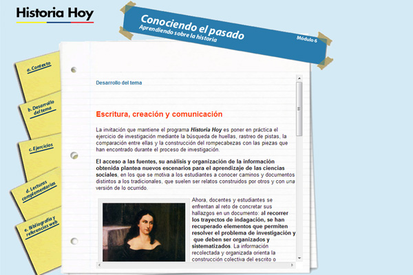
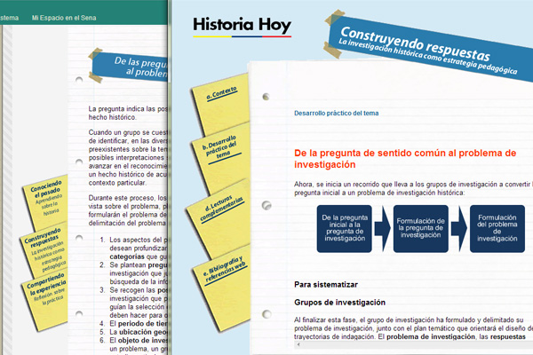

Historia Hoy
Es un programa de formación virtual para docentes en ejercicio. Su objetivo es fortalecer las competencias profesionales de los docentes a partir de la aplicación de la metodología de investigación histórica como estrategia pedagógica que permite generar innovaciones en los procesos de enseñanza –aprendizaje de la historia y de las ciencias sociales. Este curso posibilita a su vez el desarrollo de competencias básicas de los estudiantes en particular la referida a pensamiento científico.
Este curso de formación tiene una duración de 189 horas y está dirigido a docentes de Ciencias sociales.




◄ Deslice las imágenes con el dedo ►